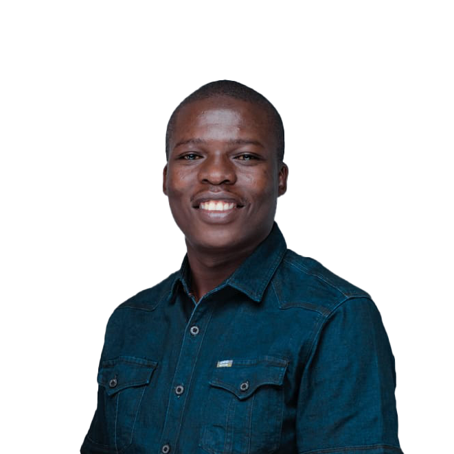

Gender Equality Champion Last-Mile Female Health & Hygiene Infrastructure Circular Economy Mandela Washington Fellow Rotarian CEO
Last-Mile Female Health & Hygiene Infrastructure for gender equality and a circular economy.
I am Omondi Eric — CEO building practical female health & hygiene access, trainings, and advocacy through Esonga Menstrual Care, grounded in circular, last-mile models and gender equality.
Busia, Eastern Region, Uganda
Training · advocacy · partnerships

Leadership
MBA-backed strategy
Operations and fundraising discipline for sustained community programmes.
Organisation
Esonga Menstrual Care
Products, kiosk-style access, and community-led menstrual health outreach.
Recognition
Mandela Washington Fellow
Profiled by U.S. Embassy Uganda among continental innovators.
Practice
Mission in practice
Affordable reusables, hygiene skills, and stigma-aware dialogue — combined so neighbours can replicate solutions after a single intensive training sprint.
- Workshops: pad-making, disinfecting routines, basic sales math.
- Schools: discreet referrals, storage ideas, SMC-friendly check-ins.
Press
Verified mentions
Independent sources for vetting timelines and framing.
Road map
Strategic priorities
Scale affordable reusables
Stronger textile links, neighbourhood seamstress networks, kiosk routes with simple restock data.
Train-the-trainer pipelines
Pads and soap curricula with facilitator guides and light follow-up nudges so skills outlive short projects.
School attendance dialogue
Evidence-friendly tools with SMCs — anonymised only — linking supplies to continuity in class.
WASH & SRHR alliances
District water desks, clergy, youth coalitions — keeping menstrual budgets inside core development plans.
Field
Photo highlights
Exposure visits and diplomacy moments alongside everyday community work.

Peer learning visit
Studio and group sessions that sharpen how menstrual stories are shaped for media and classrooms.

U.S. Mission Uganda
Regional networks recognising menstrual health entrepreneurship as diplomacy-relevant outcomes.